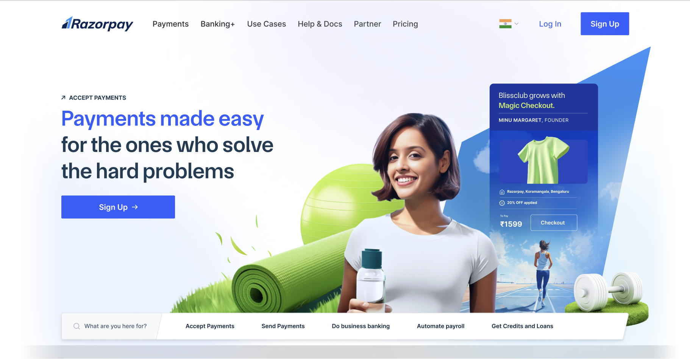

Context
Context
Razorpay built its name on a payments gateway, and its homepage looked like it: dark, technical, dense with product terminology. As the company expanded into neobanking, payroll, and lending, the brand needed to feel approachable to smaller, less technical businesses. The redesign led with a photograph of a small business owner and the line "Payments made easy for the ones who solve the hard problems."


The redesign was a brand and design initiative moving quickly toward a launch date, and no evaluation had been scoped. I proposed one, on a simple argument: a page this trafficked, changing this much, deserved evidence that the new warmth didn't cost it comprehension. The specific risk I was worried about was that in pursuing look and feel, the page would stop answering the three questions every first-time visitor brings to it: what does this company do, is it for someone like me, and can I trust it with money?
Because nobody had asked for the study, winning agreement for it, scoping it inside a fixed deadline, and making it useful to five different teams was as much the work as running it.